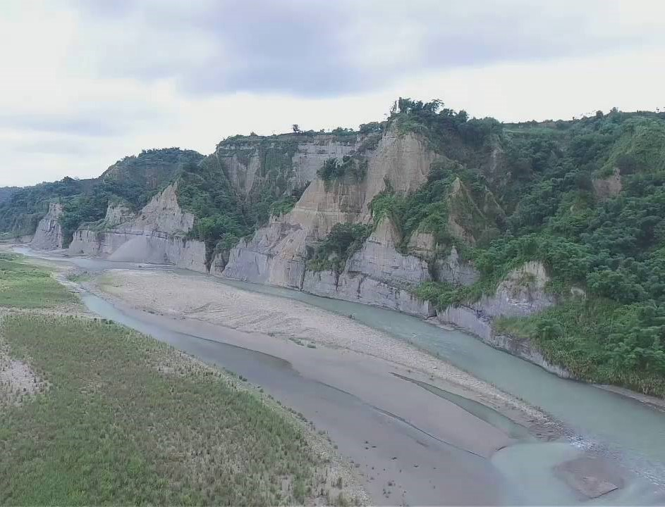
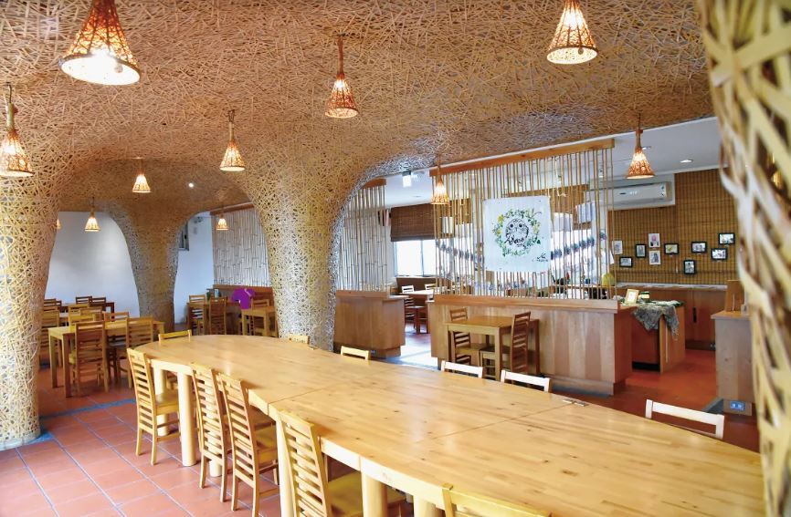
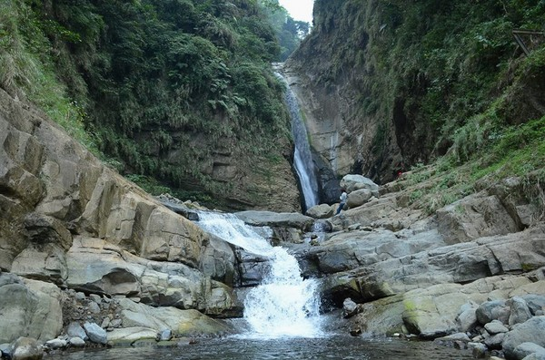
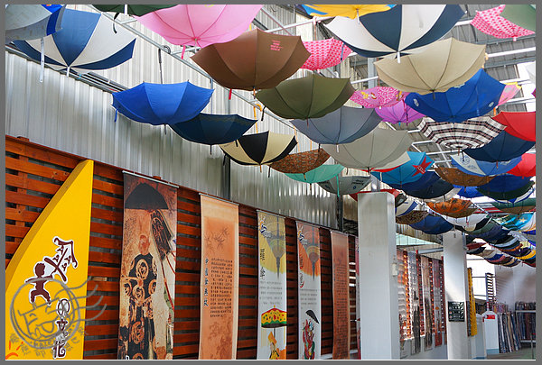
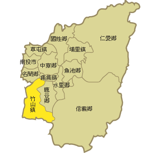

全台第一座階梯式索橋的吊橋，全長136公尺，共有208階，兩端落差高達20公尺，位於梯子嶺上方又有階梯，經命名活動給了它「梯子吊橋」名稱，但人們多愛叫它「天梯」。
在我家附近，不管甚麼時候的小黃山都很漂亮。夏天的午後千萬不要去，因為溪邊的土屬於黏質壤土，一旦溪水暴漲很危險，會跑不了。
位於南投竹山台西客運上方。創辦人運用當地盛產的竹子巧妙的將竹子的元素融入餐廳裡，以至少5500條竹子從地磚到天花板編制出＂竹青庭＂。
瑞龍瀑布高度約為三十公尺，共分為三段，瀑布上游種有大片孟宗竹林，下游溪谷潺潺流水清澈，充滿大自然幽靜的氣息。
位於南投縣竹山工業區內，在台灣曾為洋傘王國的期間貢獻巨大，因時代變遷，傳統產業日漸被取代，藏傘閣因而轉型成為雨傘成品觀光工廠。

竹山地理位置